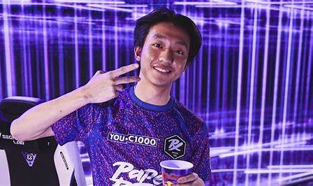

Forsaken
Jason “f0rsaken” Susanto adalah pemain profesional Valorant asal Indonesia yang saat ini mendulang prestasi bersama Paper Rex. Setelah bergabung dengan Paper Rex selama dua tahun, f0rsaken sudah mendapatkan banyak sekali kemenangan dan tentunya mengalahkan banyak sekali tim dari seluruh dunia. Penasaran seperti apa profil dan beberapa fakta menarik tentang f0rsaken? Yuk, simak artikel KINCIR berikut ini.
Hingga saat ini, f0rsaken sudah banyak sekali menang turnamen-turnamen Valorant bersama Paper Rex. Ia jadi mulai dari turnamen kecil seperti GLHF Open Cup hingga saat ini yang baru dia dapatkan adalah VCT Pacific 2023. emampuan bermain dari f0rsaken tidak dimiliki oleh banyak pemain Valorant. Keberaniannya saat dia mengagetkan musuh dengan melakukan rush adalah sebuah kepercayaan diri yang sangat besar. Saat f0rsaken masih berada di umur 13 tahun, dia sudah bermain untuk Recca Esports, tim Indonesia cabang Counter Strike: Global Offensive. Karena satu dan lain hal Recca Esports harus bubar dan f0rsaken pindah ke rumah barunya, Aerowolf.
Pada 2018, f0rsaken memutuskan untuk bergabung dengan BOOM Esports. Di bawah naungan tim ini, ia meraih banyak pencapaian. Pada 2020, penawaran dari JMT Game Team datang untuk f0rsaken. Setelah bergabung selama dua bulan, f0rsaken harus mundur karena masalah internal. Di tahun yang sama, f0rsaken mendapatkan tawaran dari Harley “dsn” Örwall via Facebook untuk bergabung dengan Paper Rex. Mulai saat itu, f0rsaken memutuskan untuk berpindah dari Counter Strike: Global Offensive ke Valorant.